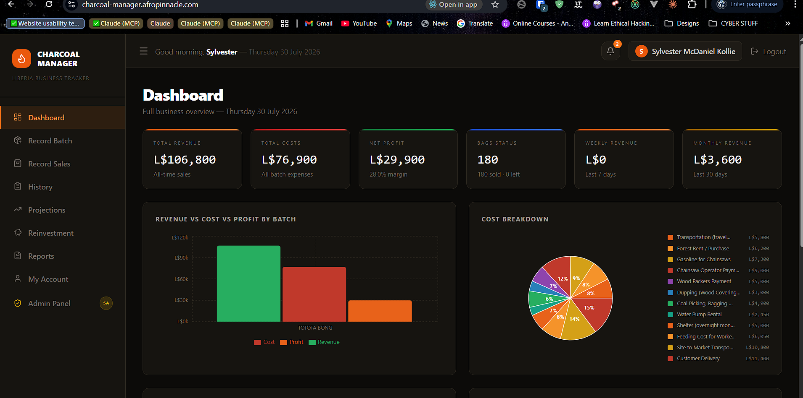
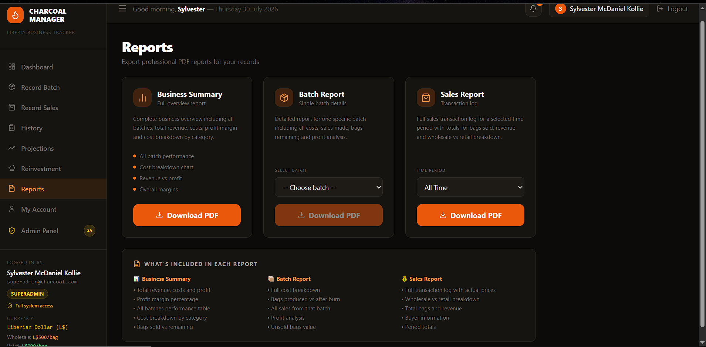
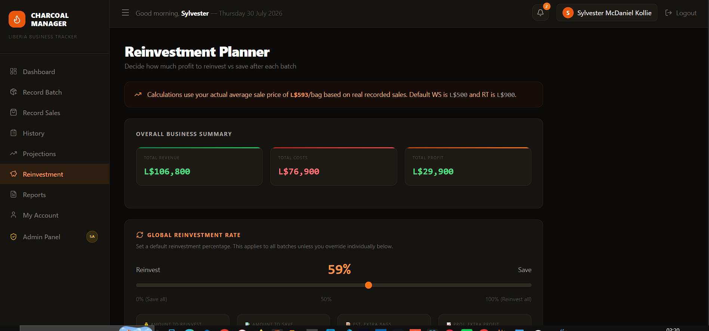
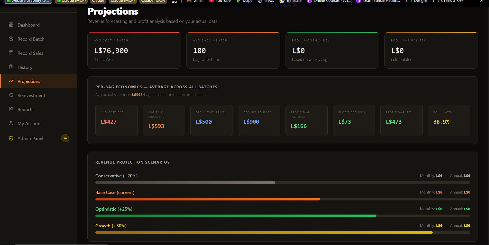
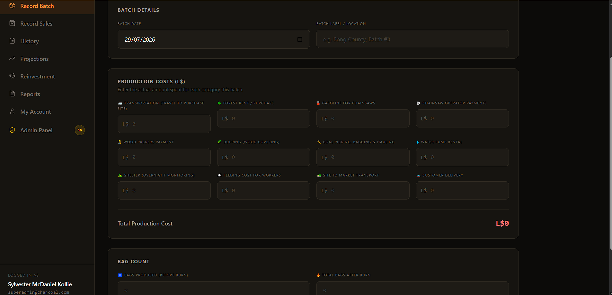
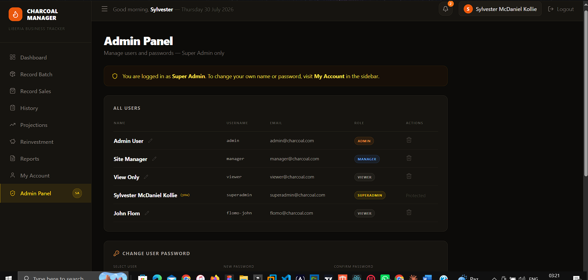

Case Study
Charcoal Manager
The full-stack platform that runs my charcoal business in Liberia — from live operations to financial planning — designed, built, and deployed end to end, solo.
Try the live demo
Read-only viewer account — viewer@charcoal.com · viewer123
01The problem
Running a charcoal business means juggling production, sales, expenses, and reinvestment decisions — usually across notebooks, memory, and scattered spreadsheets. It's hard to know the true profit, harder to plan ahead, and easy for money to leak in the gaps. I wanted a single source of truth that could capture what's happening day to day and turn it into decisions I could actually act on.
02What it does
Operations tracking
Records production batches, sales, and profit as they happen, with a full batch lifecycle from bags produced to after-burn to sold and remaining.
Detailed cost model
Captures expenses across a dozen real categories — transport, forest rent, chainsaw fuel, labour, delivery and more — so true costs and margins are always visible.
Dashboards & charts
Revenue-vs-cost-vs-profit and cost-breakdown visualisations turn raw records into an at-a-glance picture of the business.
Financial projections
Forecasts monthly and annual revenue across conservative, base, optimistic, and growth scenarios, with real per-bag economics and ROI.
Reinvestment planner
An interactive planner splits profit between reinvestment and savings — with per-batch overrides and conservative/balanced/aggressive presets.
Downloadable reports
Generates professional PDF business summary, batch, and sales reports for record-keeping and decisions.
Roles & access control
Super-admin, admin, manager, and viewer roles with user management and secure authentication.
Installable PWA
Fast, mobile-first, and installable for use in the field, priced in Liberian Dollars.
03Architecture
A clean separation between an intuitive front end, a managed backend, and hosting — chosen to let one person build, ship, and maintain a reliable product.
04A look inside
Screens from the live app.






05Reporting
The app exports professional PDF reports on demand. Real reports contain live business and customer data, so they're not published here — happy to walk through them on request.
Business Summary
Total revenue, costs, and profit; profit-margin %; a performance table across all batches; and a cost breakdown by category.
Batch Report
Full cost breakdown for a single batch, bags produced vs after-burn, every sale from that batch, profit analysis, and unsold-bag value.
Sales Report
A full transaction log with actual prices, wholesale vs retail breakdown, total bags and revenue, and period totals.
06Decisions & challenges
Getting the financial logic right
The hardest part wasn't the interface — it was the money. Projections, reinvestment logic, and report accuracy all had to be correct, because a real business relies on them. I worked through the data model and calculations step by step and validated every figure against actual sales and expenses before trusting it.
Building AI-first, verifying by hand
I used AI assistants across the build to move quickly, especially on backend logic that was newer territory for me. But I treated their output as a first draft — checking it with tests and first-principles reasoning so the result was reliable, not just fast.
One person, whole product
As the sole developer I chose a stack (React, Supabase, Vercel) that let me own everything from schema to UI to deployment without a team — trading breadth of tooling for speed and maintainability.
Want the full picture?
Explore the live app with the demo account, or get in touch to talk through the code and decisions.
Open live demo ↗